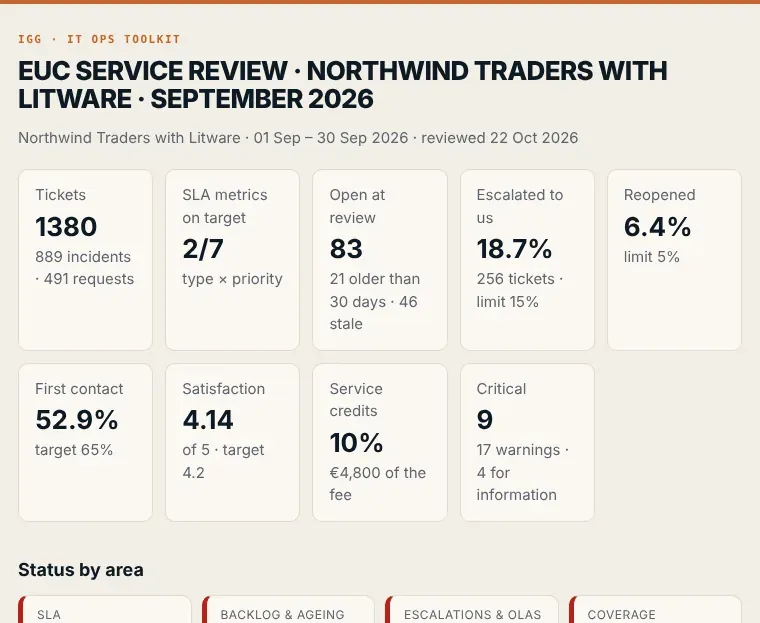

The provider's monthly pack says 96% and the users say the end-user service is slow, and both are usually right. The P2 figure leaves out tickets that spent a week in "waiting for customer", and a fifth of the compliant tickets were closed in the last 10% of the window. That is the gap the monthly service review published with this post is built to explain. Its demo is a made-up trading company with offices in four cities, run by a fictional provider with an offshore desk and onsite teams, and 1,454 tickets with the problems placed on purpose.
The cause is in how the figure is computed. Out-of-hours P2s wait for the follow-the-sun hand-over between time zones, and the average hides them. The tool recomputes the SLA, the service levels agreed in the contract, from the raw tickets with the rules written down, so both sides accept one set of numbers.
A 19% escalation rate and twelve tickets stuck on the internal side
In the scenario, the provider escalated 19% of its tickets to the internal teams, and the network team has been sitting on twelve of them since July, so that breach belongs to the internal side. The tool measures those escalations against OLAs, the targets the internal teams owe the provider, with the clock starting at the hand-over.
The review covers six areas: SLA per type and priority with business-hours or 24x7 clocks and pending time subtracted; backlog and ageing by team; escalations; coverage in and out of hours; quality, from reopens and first-contact resolution to satisfaction, last-minute closes, parked tickets and instant closes; and the contract. For the contract it computes the service credits per missed metric, up to the monthly cap, which nobody had claimed because nobody had computed them.
An agenda with two sides
The output includes a web report and service-review.md, an agenda with what to raise with the provider and what is owed to it, plus actions.csv with owners, a scorecard, breaches.csv with a cause column for the provider, ageing.csv with a decision column, escalations and findings.
How to use it with real data
It runs on Python with the standard library only, with 16 tests and a runbook for before, during and after the meeting. A read-only PowerShell exporter covers Jira Cloud, and ServiceNow list exports load as they are. The first run goes next to the provider's own pack, and the difference between the two, the exclusions, is the first thing to agree.
Where it comes from
It comes from managing end-user services with providers: SLAs and OLAs, provider and contract negotiation, backlog follow-up, escalations with offshore teams and process ownership for incidents, requests, changes and problems. The review goes better when the internal OLAs sit next to the provider's SLAs; half of the "provider problems" turn out to be queues on our side.
Want to bring it to your environment or adapt it to your case? Get in touch and we can look at it together.
Tech Career Lab · newsletter
Found this useful? Every two weeks I send one practical idea for IT professionals: LinkedIn, projects, networking and hiring processes.
Sign up and get the 33 ideas →